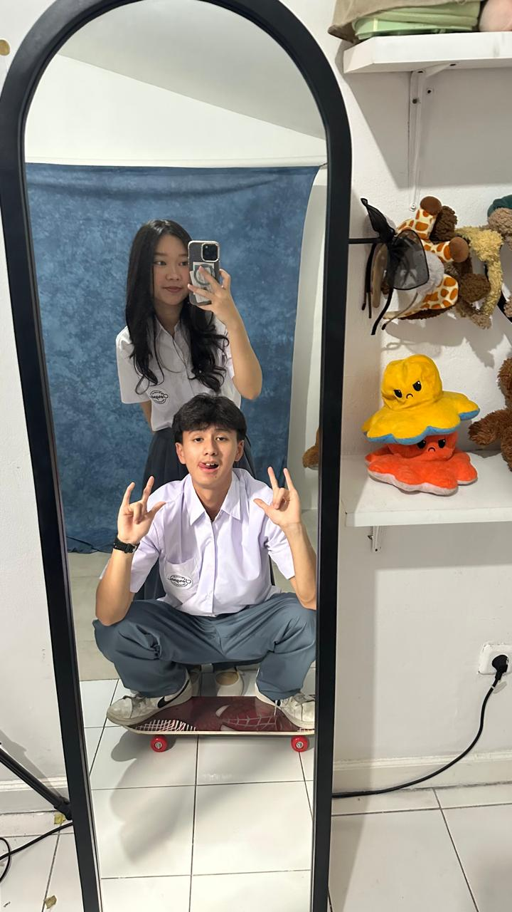

Perasaan gw kemarin lagi tidur di 2024, eh bangun-bangun udah 2 Nov 2025
Happy Anniversary, Catherine Irena Santosa!
Time flies extremely fast ya. Rasanya baru kemarin, tapi sekarang udah sampai di titik ini salah satu milestone penting buat kita berdua.
Gw bener-bener bersyukur bisa jalan sejauh ini bareng lu, dan makasih udah jadi bagian dari hidup gw.
Jangan lupa juga buat bersyukur sama Tuhan, karena semua ini udah dirancang sama Dia, bahkan lewat hal-hal yang kadang nggak kita pahami.
Yang jelas, semua pasti untuk kebaikan kita.
Lihat kenangan kita
←
Koleksi Kenangan Kita
Ini beberapa kenangan kita selama satu tahun ini

Pertama kali foto langsung ✌🏻

Awards night 2023

Catherine's bday celebration 🎂
←
A brief letter
Masih ingat hari pertama kita ketemu? yang mana aja ya? wkwkwkkwwk. Ada yang photo bareng secara ngga sengaja di booth Admitted Day 29 May 2023, ada yang pas seorang PIC mentor mencoba mengapproach chiefnya yang bolos abis jalan2 ketemu Chanyeol (Training Mentor - NSO 2023), ada yang sapa-sapaan di tempat makan dorm semenjak kenal di mentor. Trus? menghilang tuh ampe tahun selanjutnya. Oh iya dong, kalo mau spesifiknya ya pas briefing PIC Usher Awards 2024 (30 April 2024). Sama pertama kali jalan ya? yang cowonya modusin buat minta temenin pas wifi dorm lagi rusak katanya (9 Mei 2024). Sudah sangat banyak yang kita lalui selama satu tahun terakhir ini, baik suka, duka, keabsurdan, dan hal aneh lainnya. Dan sekalipun ini mungkin bakal mengganggumu but for my regrets, I want to say sorry for hurting you. Mungkin gw gabakalan detail-in di surat yang ini ya, but I am really thankful for us until this day. Once again, Happy Anniversary Cath!
I love you.
Sincerely yours, with love,
Isaac Deng